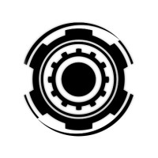

Systems Integration Director

UBC Rover Design Team (2019-2023)
- I Was the technical lead for a team of 15 students designing a 50kg Mars Rover with autonomous capibilities
- Created project timelines and met with all sub-teams to ensure smooth integration and testing
- Designed and built a 6-Axis robotic arm capable of lifting 2kg
- Wrote firmware for controlling arm components (motors, limit switches, encoders) and communicating states with host PC via serial
- Wrote Software (Robot Operating System, C++) for connecting the arm to an xbox controller and inverse kinematics solver
- Placed 3rd out of 13 teams in our team's first competition in 6 years! (CIRC, 2022)
- See projects page for more details of my 4 years at this team!